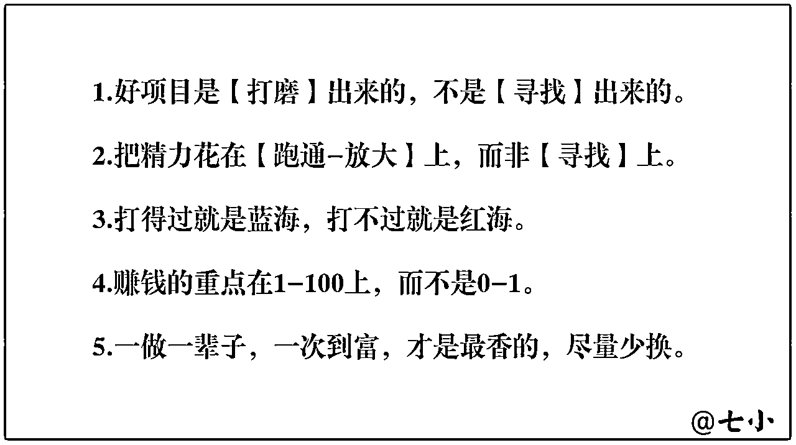

来源：https://fnuz0veosn.feishu.cn/docx/CBJhdD0dTokH8tx8HKYc1nJSnnc
大家好，我是阿讯。一名爱折腾的00后大学生，今年毕业后将去绍兴新昌一家业内全球第一的外企工作，希望有机会可以跟浙江的圈友链接呀~
这是我自4.3加入生财有术后第一次发帖，两年前刚进入阅读圈知道知识星球这个平台的时候，我就知道了生财有术，那个时候看到高昂的门票费以为自己很可能没有机会加入了。但是没想到两年后的chatGPT给了我这个机会，那么我是如何抓住这次机遇实现赚钱小白逆袭的呢？详见正文
本文目录如下：
一、机会常常是在我们勇敢尝试的过程中找到的，请在承受范围内疯狂试错
1）不管怎样，先试试再说。
2）在试错成本内疯狂尝试。
3）提问的注意事项。
二、靠感觉捕捉，靠理性分析
1）人生是个漫长的成长过程，而圈子是我们成长的跳板
2）靠感觉捕捉，靠理性分析。
三、利用好行动力才能抓住信息差
四、团队合作胜于闭门造车
时间线回到2月8号，那天黛色翩翩在挽歌的自媒体俱乐部群里分享了一个chatGPT注册教程，当时我还不知道这个是什么，直到进入chatGPT风向标星球看了几篇应用介绍，进行了简单了解后才觉得这个东西不简单，冥冥之中觉得这个东西会给我带来很大的影响。
然而，那天我正好要返校，来不及注册。等到第二天准备注册时，却在风向标上看到停止注册的消息。
虽然心有放弃，但直觉告诉我这可能是个机遇，于是我果断在风向标星球帖子中找到一个卖账号的帖子，并在淘宝店铺花了十几元购买了一个账号。
购买完成后，我开始研究如何登录使用。按照登录教程第一个月我需要花至少140元，而且第一次接触这种新事物，其实用性也无法保证。因此，我选择了另外一种第一个月最低的消费近50元的方式。
如果实用性很好，带来的价值远超50元，那么后续再多花一点钱续费也行。
虽然搞明白了登录流程，但是使用又是一个问题。因为第一次接触外网，很多地方都很陌生。因为很多地方是全英文，我只好先全部翻译一遍，然后根据中文的大概意思去猜测。
比如，我一开始直接退出，结果发现我还能继续使用GPT。当时我就有点慌了，这方面的问题在百度上也没办法直接搜索到回答。
于是赶紧去群里问了一下，当时黛色告诉我“右键quit”，我一脸懵逼，又不敢问是什么意思。于是我只好把看到的单词都对比一遍，最后在设置栏翻到最后面找到了这个quit单词。
群里也正好出现一个典型的反例，想必大家应该也遇到过类似的人。
我们都是在挽歌的俱乐部群里，2.9开始问我怎么注册，问的很多都是黛色大佬提供的教程里有答案的问题，甚至只需要把英文翻译一下就能知道答案的问题都要来问别人。
看到她一直问一些教程里有答案的问题我就开了免打扰，然后放进不显示消息表列里。过了几天后我以为她已经搞定了或者放弃了。2.19的时候打开聊天框看了一下，结果没想到过了十天还没搞定上网，而我没有回复的问题她自在这十几天里自己又搞明白了，于是看到她上网就差最后一步就帮了一下。
只是没想到进入官网后的授权点击“next”这样的事，明明自己翻译一下就明白的东西她也要向别人提问，而且从第一天开始前后我花了我几个小时手把手帮她，从头到尾连句谢谢都没有主动说。
后续她看到我不理她后又去找其他人，最终群主实在受不了她，第一次因为问问题踢人，然后大家才知道她加了群里很多人，经常追着问一些小白问题。
在这里面我学到了什么呢？
在如今快速发展的世界，每一天都有很多新事物出现，想要跟上人类文明的发展，我们就必须拥有绿灯思维，也就是积极拥抱变化，探索变化。
绿灯思维是我在学理财的时候接触到的，与之对应的是红灯思维，两者的区别在哪里呢？
对于拥有红灯思维的人，他在遇到自己不认可或者不熟悉的观点、建议、事物就会本能的抗拒，内心从一开始就屏蔽了这些新观点、新事物。
因此，对于这些人，即使他嘴上说愿意去学，实际学的时候却是左耳进右耳出，压根不会在大脑里停留思考、分析，更别说去付出行动。
其实在我们遇到与过去认知不一致的观点时，大部分普通人都会陷入习惯性防卫，这是我们人类基因里的记忆，只想要待在熟悉的舒适区。
但是如果我们一直陷入习惯性防卫而不自知，那学习再多的新知识、新观点都没用，我们的成长就会停滞不前。
而想要打破习惯性防卫就需要建立绿灯思维。
拥有绿灯思维的人遇到新观点、新事物时的第一反应是这个观点、事物一定很有趣，说不定对我有用，我先试试再说。
先接受，再内化，把知识变成自己的，再实践，这就是绿灯思维。
与绿灯思维相似的成长型思维也是如此。拥有成长型思维的人相信人是可以成长、改变的，没有人是会固定一成不变的，这样的人在面对变化的时候会更容易适应。
关于成长型思维和固定型思维大家可以去看看《终身成长》和《刻意练习》，这两本都是帮助我们建立成长思维、是、绿灯思维的，告诉我们大部分人智商都差不多，很多事物我们都可以通过刻意练习学会，只要我们愿意去积极面对变化、拥抱变化。
拥有绿灯思维，愿意接受新观点、新事物还不够，因为这仍然在认知层面，所有的认知不转化为行动都是空谈！
以前有个热榜问题叫做：为什么有的人道理都懂，却仍然过不好这一生？
因为懂道理始终是认知层面上的，认知再高的人不去行动都是纸上谈兵。
正好最近在同一个群里有另外一位新朋友加上了我，通过初步的交流我发现她了解的、学的东西挺多，可是没一个做成功的。
进一步交流后我发现了她的问题：一直在学，一直在听别人说，自己却不去实践，总认为要把方方面面都学会了才可以实操。
这个问题也是很多生财小白的问题，七小哥在 里已经说的很清楚了，我就不再赘述了。
对此，我是直接告诉她：先试试，别光听别人怎么说，行不行尝试了才知道，又花不了多少成本，怕什么呢？
每次提到行动我都会讲到试错成本，因为我出自农村，深知对于我们大部分条件有限的普通人，试错的资源真的不多。一旦判断失误有可能导致自己甚至家庭长期受到毁灭性打击，这也是很多人不敢试错的原因。
可我们不可能每一次判断都百分百准确，也不可能每一次行动都能做对。哪怕汽车安检多么严格仍然有可能出现车祸，可你会因为害怕出车祸就不坐车吗？
有的人在生活中就是太追求稳定了。稳定的生活、稳定的工作、稳定的恋爱关系。做什么都总想确认万无一失了才敢去做。
追求稳定性、确定性不能说不好，因为追求稳定是我们人性的一部分，每个人都会本能的选择安全区。但是在这个充满变化的世界里，我们每天都在面对不确定性。
越是追求稳定的人往往风险越高，因为他们经不起风险。
就跟生活在无菌环境里的婴儿难以在正常环境中存活一样，我们能够在充满病菌的环境生存就是因为我们从小就在接触病菌，身体已经适应了一定的病菌。
就比如谈恋爱，有的人总是觉得认为一定要遇到理想对象才能开始谈恋爱，一旦有过几次失望的恋爱关系后就不敢再谈恋爱。
但是首先，每个人都会多少戴着一些面具，你不深入了解就没法知道对方是不是理想中的男友。而这就是试错，试错都是有风险的，你有可能跟对方都快领证了才发现对方不是你的理想型。
其次，理想的男友不是寻找的，而是通过彼此成长和磨合的。就像总统夫人说的，不是嫁给了总统，而是嫁给谁谁才成为了总统。
这就跟我们寻找适合自己的项目一样，好的项目不是寻找到的，而是打磨出来的。

而这个寻找、磨合的过程其实就是在试错，但试错一定要控制试错成本。
如果尝试新事物的试错成本超过你的承受能力，那就换一个。
当然，对于二十出头的我们，其实试错成本很低的，即使是几百块几千块，大不了多吃几天泡面，一两个月就能恢复正常生活。
比如加入生财有术，加入航海项目，这些都是我试错的一部分。这几年在知识付费上花了不少，各种知识星球、成长社群也加入不少，其中有很多加入一段时间后发现对我价值不大，更多的是标题党，干货压根没多少。
但是如果我因为害怕被割韭菜就不去加入这些社群圈子，那我又怎么可能遇到生财有术、愚公掘金等优质的星球呢？如果我不去报名航海下场实操试错，又怎么能够打磨出适合自己的项目呢？
但目前我知识付费最贵的就是生财有术的2K，虽然肉疼但不影响正常生活。
我有位之前认识的朋友前段时间找我借钱报名一个学费3.8W的某商学院的自媒体课程，为此父母朋友都打电话借光了。
我看了一下课程内容发现还不如生财有术的。当然，即使她这次真的被割韭菜，真的试错失败了也能在一两年内恢复。
关于有效提问已经有很多大佬的精华帖说得很清楚了，我就简单说说两点我认为最重要的。
首先，提问前想清楚自己有没有尽力去寻找答案，是不是只有问对方才能解决这个问题。不要拿一个百度一下就知道的问题或者对方提供的教程、资料里有答案的问题去浪费别人的时间精力。
其次，提问的时候把问题的背景、条件等说清楚，能一条消息问清楚的就不要让回复两条消息，又不是谈恋爱，没必要多次一来一回地浪费时间。
当时，我同样是在自媒体俱乐部群里看到了关于《玩赚chatGPT》社群的消息。挽歌简要分享了这个项目，第一期售价为299元。
我读完社群介绍和目录后，毫不犹豫地加入，依靠直觉。这种直觉告诉我，越早学习chatGPT越好。
加入玩赚chatGPT社群后，我仿佛发现了一个新世界。作为最早一批加入的成员，我注意到大部分群友都来自生财有术圈子。他们的讨论让我不敢轻易发言，只敢小心翼翼地询问如何开通分销权限。
通过分销这个社群，我实现了第一次变现。仅仅在朋友圈发布推广文案，便有人询问并下单。
第一天，我就赚到了200多元。之后的一周内，每天都能出售两三单，共计变现约1K。之后的一周几乎每天都能出两三单，前后变现了1K左右。这里还得感谢挽歌的推荐和刀姐提供的平台~
当我看到第一天晚上200多元的收入，脑海中浮现出父母在工地辛苦工作一天也只能挣到200多的画面，心头涌起难以言喻的感慨。
有时候，赚钱并非难题，真正困难的是进入一个能赚钱的圈子，结识一群会赚钱的人，提升自己的赚钱认知，缩小赚钱的信息差。
这段经历我意识到：
进入对的圈子能让你少走很多弯路，圈子带来的是认知升级和信息优势。
如果我没有进挽歌的自媒体俱乐部，那么我很可能跟其他人一样只能等到在热搜上看到chatGPT的信息，然后不以为然，也不知道怎么注册，不知道在哪里获得账号，最后只能成为在岸上看别人吃螃蟹的人。
圈子的优劣决定了你能够跳得多高、成长多快。
关于破圈，我在生财有术的新人指南里就看到了七小大佬的破圈指南，里面包含了好几篇精华帖的内容。
我对七小哥的破圈指南进行了一些解读并在自己的《生财有术探索见证群》里进行了分享，
一个人一生会进入很多圈子，每一个圈子都会给你不同的认知和资源。
我们说一个人的财富、认知取决于身边最亲近的六个人，同样，你最重要的几个人生圈子的平均质量决定了你的人生质量。
那么破圈本质上是什么
破圈最终还是破的认知圈，认识一个人、进入一个圈子都是为了提升自己的认知。
但是别的圈子凭什么让你破？靠几句闲聊吗？不，是靠你输出的价值。
社交的本质就是价值互换，你用你独特的价值去换取其它圈子的认知价值。
任何一个圈子的大佬都一定有极强的输出能力，靠着输出的内容让你获得认知的提升，从而认可对方。
我们的输出就是我们最好的名片，他人能从我们的输出中看出我们的价值和潜力。
破圈方法分享详情见
作为受助者，我们如何更好的反馈呢？
首先，了解对方的目标。对方为什么愿意帮人，帮你的目标是什么？了解目标后主动靠近对方的目标才能给对方更好的反馈
其次，真诚领情向前进。受到帮助后不用不好意思，每个人用自己的经验帮助到他人都会感到开心的。所以你只需要领下这份恩情，带着感恩的心往前走就可以。
第三，不亚于任何人的努力。人家花时间帮你，你却三天打鱼两天晒网，论任何人下一次都不想在帮你了。你实在能力差一点，做事慢一点，但是你一直在努力的做，人家看到你这么努力还是没有结果，即使再多花一些时间也愿意再帮助你一下
第四，及时反馈进度。主动汇报进度，一是让对方知道你在他的帮助下的的确确开始取得了结果，就像见证生命诞生一样看着你在他的帮助下从困难中走出来。二是让对方安心，他在帮助你后可能会担忧给你的帮助到底有没有用，你在执行的时候有没有遇到其他问题。
最后是完成他的目标。比如，有的大佬愿意帮助小白是看到小白身上的潜力，想着说不定小白成长起来可以成为自己的帮手，在一定程度上帮自己解决问题。
链接贵人的分享稿详情见
《大哥说我精华帖没用户思维?! 一气之下，我分析了40W评论数据！挖掘出了生财小白的7个痛点问题！》
文章目录如下：
—、搜索采集与数据分析
1）搜索目标信息
2）采集目标信息
3）关键词查询阅读
4）痛点需求分析
二、七个痛点的总结与解决
①内容阅读问题：内容太多，阅读压力大，看不过来了，希望内容能分类、订阅
②实操落地问题：进来好久但没赚到钱，觉得内容不够实操，不知如何下手，希望能有内容分级
③对比焦虑问题：和优秀的圈友比较，越对比越自卑焦虑
④踩坑避坑问题：大佬成功经验难以复制，希望能有更多可学习的避坑经验
⑤浮躁切换问题：项目看的眼花缭乱，自己变得浮躁了，项目不停换
⑥三无人员问题：作为无资源、无产品、无能力的三无人员，不知道如何用好生财有术
⑦链接圈友问题：链接不到圈友，感觉自己游离在圈子外
大家也可直接去看七小哥的精华帖，详见 。
直觉是感觉的一种。
前面我提到两次靠直觉抓住了这次机遇，之前我还不知道直觉是如何影响我决策的，直到看完的《认知觉醒》我才算找到答案。
通过阅读《认知觉醒》，我了解到潜意识处理信息的速度非常快，我们每天产生的许多想法都来自潜意识的灵感。
因此，我们应该学会倾听感觉，利用感觉去捕捉信息，然后用理性进行决策。感觉可以帮助我们迅速捕捉潜在的机遇，并在关键时刻作出正确的选择。
但我们也要注意，感觉并非绝对正确，需要与理性相辅相成。在关键时刻，我们应该善于运用直觉和理性，以便更好地把握机遇。
玩赚chatGPT开营第二场直播讲调教专题，在那之前我跟很多人现在的状态一样，只会用来聊聊天或者直接给个标题写篇文章。
但是听完调教的直播后我才反应过来，原来这才是chatGPT的正确玩法，我之前那都是小孩子过家家。
在直播后半程我就开始调教chatGPT写小红书笔记，我找到了之前在花爷的小红书训练营的资料，根据训练营教我的方法去教chatGPT。
但是在调教过程中，chatGPT始终无法理解一些指令，以至于写不出来我满意的笔记。
于是我开始反复看交付手册中调教部分，讲身份、背景、指令的要素等反复测试，实践了两个多小时，我终于可以让chatGPT稳定写出小红书笔记，并且可以对写的小红书笔记进行拆解优化，当时把调教过程和结果分享了部分到社群，没想到得到了很多成员的肯定。
在调教完后我就把自己的调教过程写成了教程，并将调教大纲截图分享到了社群。
因为那个教程是当时全网第一份详细讲解如何调教chatGPT写小红书笔记的教程，看到教程后有近十位社群的群友特意加我想要付费买教程看看，其中还包括我之前不敢多搭话的黛色翩翩。
在调教chatGPT写小红书笔记的分享中，我分享了调教 GPT 写小红书笔记的想法和技巧。这些技巧来自于《玩赚 ChatGPT》交付手册的调教原理以及之前在花爷的小红书训练营学到的内容。调教 GPT 的过程启发于我在家训练小狗指令的经历。在《玩赚 ChatGPT》中，我们说过，GPT 就像一个情商智商都很高的小孩子，但它对人类的思维不太理解。因此，我们可以采用基于模仿的方法来帮助 GPT 学习。
1.引入背景
2.预设角色
3.预设指令（已淘汰）
4.输入完整案例
5.反馈学习效果
6.反馈优化
7.拆解教学
8.反馈学习效果
9.反馈优化拆解模板
10.优化笔记
11.反馈优化学习效果
12.调教结果
调教chatGPT写小红书笔记的教程详见
这篇小红书调教的教程最后在玩赚chatGPT四个大群里分享，一共有1600多人，那也是我第一次在这么多人勉强分享，也是第一次真正意义上借助GPT变现299元。
在那次分享后我算是真的意义上有了一点点影响力，很多玩赚社群的朋友看完分享都来链接我，给我积累了第一批信任用户。
写教程的初衷其实是想通过固定的指令调教出一个可以稳定写小红书笔记的chatGPT，后来我又想，既然chatGPT是提供大量训练的语言模型，那能不能直接通过中文而不是代码去做这样一个训练，因为中文和代码都同样是符号，只要让GPT理解中文指令应该就可以做到。
于是我就开始通过GPT去了解整个训练过程，并且将其运用到中文的训练上，最终通过不懈努力还真让我写出来一份《chatGPT中文训练教程》，写完教程我在朋友圈分享了一张打码的目录和部分内容图片。
没想到这张图片引起的轰动比上一次大了好几倍，在我发朋友圈的当天晚上就有人把图片拿去引流，还有大佬在知识星球到处找教程的作者。
首先，我们需要收集中文语料库作为训练数据。这些语料库可以来自新闻、社交媒体、维基百科等各种来源。不同于英文语料库的是，中文语料库在处理时需要考虑分词问题。分词是将连续的汉字序列切分成有意义的词语序列，是中文自然语言处理的重要基础。因此，在处理中文语料库时，我们需要使用中文分词工具对语料进行分词处理。
其次，中文字符集和英文字符集不同。中文字符集包括汉字、数字、英文字母以及各种符号和标点。因此，在训练中文语言模型时，我们需要调整字符集，以包含所有中文字符和标点。此外，在处理中文数据时，我们还需要考虑中文的繁简体转换问题，以确保语料库中的中文字符保持一致。
最后，训练中文语言模型时，我们还需要考虑中文的语法和语义结构。中文的语法结构和英文不同，例如中文中没有单复数和时态的变化。中文的语义结构也比较复杂，需要对中文句子的结构和语义进行分析和理解，以提高语言模型的质量。
《chatGPT中文训练教程》详见
然后刀姐看到教程图片直接说想要给出版社看看能不能加入她的《人人都能玩赚chatGPT》实体书出版，后来成功出版，我也第一次通过写文章拿到高额稿费。现在这本书在京东互联网+图书榜排名第一。
后来复盘的时候我发现，其实我写的教程也没有大家所期待的那么好，现在市面上也出现了很多类似的教程、课程，有的写的比我还好，那我能够快速变现的原因在哪里？
后来刀姐的一句话提醒了我，刀姐说玩赚社群能够成功的原因没有别的，最大的优势就是她比别人快。
发现chatGPT这个信息差后24小时内就写出了交付手册开始拉群招学员。我是正式招学员的第一天进群的，看到刀姐遇到任何运营上的问题的解决态度就是一定要快。
所以信息差需要行动力才能发挥最大效用。
首先，行动力至关重要。在众多拖延症患者中，勇于执行的人将领先于大部分人。我通过不断尝试、研究交付手册的调教教学，成功写出两个关键教程并变现。
“行动胜于空谈，执行力使你遥不可及。”
其次，抓住信息差并快速行动。想要靠信息差赚钱，关键在于谁动作快。
不论是刀姐的玩赚社群、实体书，还是我编写的教程，成功的关键在于我们抓住了信息差并迅速行动。就像刀姐曾经承认的那样：“成功的秘诀就是快。”
（刀姐自己承认的哈哈，可惜找半天没找到聊天记录在哪个群）
chatGPT写小红书笔记教程分享出去后，黛色找到我，说能不能一起搞一个注重实战的训练营。
于是我们快速组建团队，我负责交付手册和小红书的教程，在组建好团队后的三天里我就把社群交付手册、GPT写小红书教程、GPT写论文的教程写完。另外几位成员写了视频脚本、知乎好物的教程。
我们以这四个实际应用场景的使用教程为宣传点，做了海报和推文，最终吸引了近三十人报名。这次训练营虽然结果不尽如人意，但我还是从中学到了很多宝贵的经验，并实现了近2000元的收入。
通过团队协作，我们能够整合彼此的优势，共同实现更大的目标。可以说如果我是自己做同样的内容是肯定达不到相同的效果，至少在推广宣传上我就很难把训练营推广出去。
其次，很多学员其实都是从玩赚社群过来的，因为他们虽然了解了一些基础使用，但是还无法将其熟练的运营到实际应用场景中。
在训练营失败后，我开始寻找新的出路。尽管训练营未能取得预期的成功，但我依然相信我的chatGPT使用教程具有很高的价值。这些教程曾经引起了很多人的关注，甚至有人主动联系我购买。
于是，我迅速将教程更新到我的知识星球，并以此为宣传点开始推广。最终，我成功吸引了几十位朋友加入知识星球。在这之前的一年多时间里我的知识星球其实都只有我一个人在里面随心分享这让我明白：
“失败并非终点，挖掘潜在价值才是成功的关键。”
除了知识星球的运营外，我还从玩赚社群中了解到了账号交易这个盈利模式。为了拓展我的收入来源，我决定尝试这一模式。在一个分销群里，我结识了一位号源可靠的朋友，我们达成了合作意向。
为了使这个业务更加有吸引力，我决定巧妙地将自己的优势与账号交易相结合。我利用我之前创作的论文教程作为宣传点，在小红书平台上进行推广。这一策略取得了不错的效果，成功吸引了几十人关注，并且成交了二三十单。